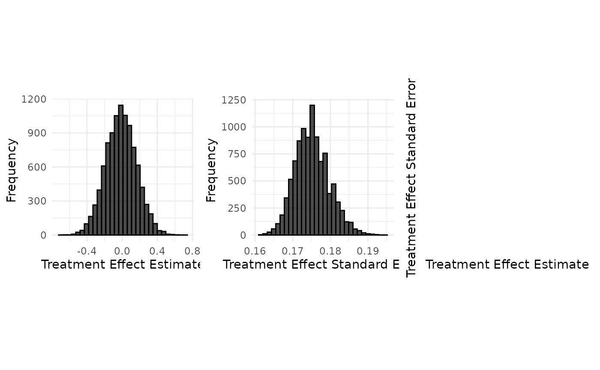
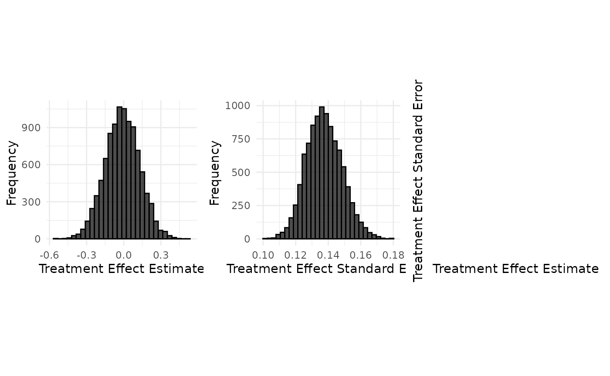

Data Generation : Teriflunomide case study (time-to-event endpoint)
Tristan Fauvel, Quinten Health
2026-09-11
Source:vignettes/data_generation/Data_generation_teriflunomide.Rmd
Data_generation_teriflunomide.RmdTeriflunomide case study
Sources: Bovis et al (2022)
Table 4 in the TOWER paper by Confavreux et al (2014) contains a joint analysis of the TOWER and TEMSO studies. We focus on the 14mg Teriflunomide treatment.
The treatment effect is defined as , where the s are rate parameters of an exponential distribution. The standard error on the log rate ratio is approximately .
set.seed(42)
config_path <- system.file("conf/case_studies/teriflunomide.yml", package = "RBExT")
case_study_config <- yaml::yaml.load_file(config_path)
format_case_study_config(case_study_config)| Parameter | Value |
|---|---|
| General | |
| Name | Teriflunomide |
| Summary Measure Likelihood | normal |
| Theta 0 | 0 |
| Endpoint | time_to_event |
| Null Space | right |
| Sampling Approximation | TRUE |
| Target | |
| Control (Target) | 57 |
| Treatment (Target) | 109 |
| Total (Target) | 166 |
| Treatment Effect (Target) | -0.415515443961666 |
| Standard Error (Target) | 0.266828713056808 |
| Maximum follow-up time (Target) | 2 |
| Source | |
| Control (Source) | 752 |
| Treatment (Source) | 731 |
| Total (Source) | 1483 |
| Treatment Effect (Source) | -0.4110989 |
| Standard Error (Source) | 0.05194012 |
| Maximum follow-up time (Source) | 2 |
source_relapse_rate_control <- 0.534 # Average number of relapses per year
source_relapse_rate_treatment <- 0.354 # Average number of relapses per year
# Calculate the log of the rate ratio
log_RR_source <- log(source_relapse_rate_treatment / source_relapse_rate_control)
print(paste("Observed logRR in the source study: ", log_RR_source))## [1] "Observed logRR in the source study: -0.41109892582642"Initializing a TimeToEventTargetData object with a normal treatment effect summary measure distribution
Usage
source_data <- SourceData$new(case_study_config)
drift <- 0.4
control_drift <- 0
treatment_drift <- drift + control_drift
target_sample_size_per_arm <- 100
target_data <- TargetDataFactory$new()
target_data <- target_data$create(source_data = source_data, case_study_config = case_study_config, target_sample_size_per_arm = target_sample_size_per_arm, treatment_drift = drift, summary_measure_likelihood = source_data$summary_measure_likelihood)
read_function_code(rate_from_drift_logRR)## rate_from_drift_logRR <- function (arm_drift, source_rate)
## {
## return(source_rate * exp(arm_drift))
## }
target_data$control_rate <- rate_from_drift_logRR(control_drift, source_data$control_rate)
target_data$treatment_rate <- rate_from_drift_logRR(treatment_drift, source_data$treatment_rate)
# Estimation of the sampling standard deviation on the log(RR)
n_control_target <- target_data$sample_size_per_arm
n_treatment_target <- target_data$sample_size_per_arm
target_data$standard_deviation <- sqrt(1 / (target_data$control_rate * target_data$max_follow_up_time * n_control_target) + 1 / (target_data$treatment_rate * target_data$max_follow_up_time * n_treatment_target))Aggregate data generation
Generation of aggregate data without sampling approximation
Usage
case_study_config$sampling_approximation <- FALSE
target_data <- TargetDataFactory$new()
target_data <- target_data$create(source_data = source_data, case_study_config = case_study_config, target_sample_size_per_arm = target_sample_size_per_arm, treatment_drift = drift, summary_measure_likelihood = source_data$summary_measure_likelihood)
n_replicates <- 10000
data <- target_data$generate(n_replicates = n_replicates)
target_data$plot_sample(data)
Implementation details
We are interested in the time-to-first relapse. We will assume that relapse times follow a Poisson distribution. Therefore, the time-to-first relapse follows an exponential distribution, with arm-specific rates. The parameters of these exponential distribution correspond to the adjusted annualised relapse rates (0.534 in the control group and 0.354 in the treatment group).
Now, we are interested in generating target data with various drift values with respect to the treatment effect (measured as the log rate ratio) and various control rates at constant treatment effect (the so-called control drift).
# Vector to store log rate ratios
log_rate_ratios <- numeric(n_replicates)
se_log_rate_ratios <- numeric(n_replicates)
for (i in 1:n_replicates) {
# Sample relapse times for control and treatment groups using an exponential distribution
control_relapse_times <- rexp(n_control_target, rate = target_data$control_rate) # target_data$control_rate is the relapse rate in the control arm
treatment_relapse_times <- rexp(n_treatment_target, rate = target_data$treatment_rate)
# Filter out relapse times exceeding max_follow_up_time (right censoring)
control_event_status <- control_relapse_times <= target_data$max_follow_up_time
treatment_event_status <- treatment_relapse_times <= target_data$max_follow_up_time
control_relapse_times_filtered <- control_relapse_times[control_event_status]
treatment_relapse_times_filtered <- treatment_relapse_times[treatment_event_status]
control_relapse_times[!control_event_status] <- target_data$max_follow_up_time
treatment_relapse_times[!treatment_event_status] <- target_data$max_follow_up_time
control_event_status <- as.integer(control_event_status)
treatment_event_status <- as.integer(treatment_event_status)
# Count the number of events
n_control_events <- length(control_relapse_times_filtered)
n_treatment_events <- length(treatment_relapse_times_filtered)
# Perform survival analysis, assuming an exponential distribution of events times.
trt <- c(rep(0, n_control_target), rep(1, n_treatment_target))
df <- data.frame(
time = c(control_relapse_times, treatment_relapse_times),
trt = trt,
status = c(control_event_status, treatment_event_status)
)
fit <- survival::survreg(survival::Surv(time, status) ~ trt,
dist = "exponential",
data = df
)
summary(fit)
estimated_rate_control <- 1 / exp(coef(fit)[1])
sample_rate_ratio <- 1 / exp(coef(fit)[2])
estimated_rate_treatment <- sample_rate_ratio * estimated_rate_control
log_rate_ratios[i] <- log(sample_rate_ratio)
# Calculate the SE of the Log rate ratio
se_log_rate_ratios[i] <- sqrt(1 / n_control_events + 1 / n_treatment_events) # this can be shown using the delta method
}
samples <- data.frame(
treatment_effect_estimate = log_rate_ratios,
treatment_effect_standard_error = se_log_rate_ratios,
sample_size_per_arm = target_data$sample_size_per_arm
)Generation of aggregate data with sampling approximation
Usage
case_study_config$sampling_approximation <- TRUE
target_data <- TargetDataFactory$new()
target_data <- target_data$create(source_data = source_data, case_study_config = case_study_config, target_sample_size_per_arm = target_sample_size_per_arm, treatment_drift = drift, summary_measure_likelihood = source_data$summary_measure_likelihood)
n_replicates <- 10000
data <- target_data$generate(n_replicates = n_replicates)
target_data$plot_sample(data)
Implementation details
It may be simpler for evaluating the OCs to sample the summary data from a normal distribution directly, instead of sampling data using the true data-generating process. Below, we compare this approximate sampling to the exact sampling approach :
# Sample number of events over the follow-up period in each arm according to a Poisson distributions.
n_control_events <- rpois(
n_replicates,
target_data$control_rate * target_data$max_follow_up_time * n_control_target
)
n_treatment_events <- rpois(
n_replicates,
target_data$treatment_rate * target_data$max_follow_up_time * n_treatment_target
)
SE_log_RR <- sqrt(1 / n_control_events + 1 / n_treatment_events)
sampling_standard_deviation <- SE_log_RR * sqrt(target_data$sample_size_per_arm)
samples <- sample_aggregate_normal_data(
mean = target_data$treatment_effect,
variance = sampling_standard_deviation^2,
n_replicates = n_replicates,
n_samples_per_arm = target_data$sample_size_per_arm
)See Data_generation_botox for details on aggregate normal data generation.